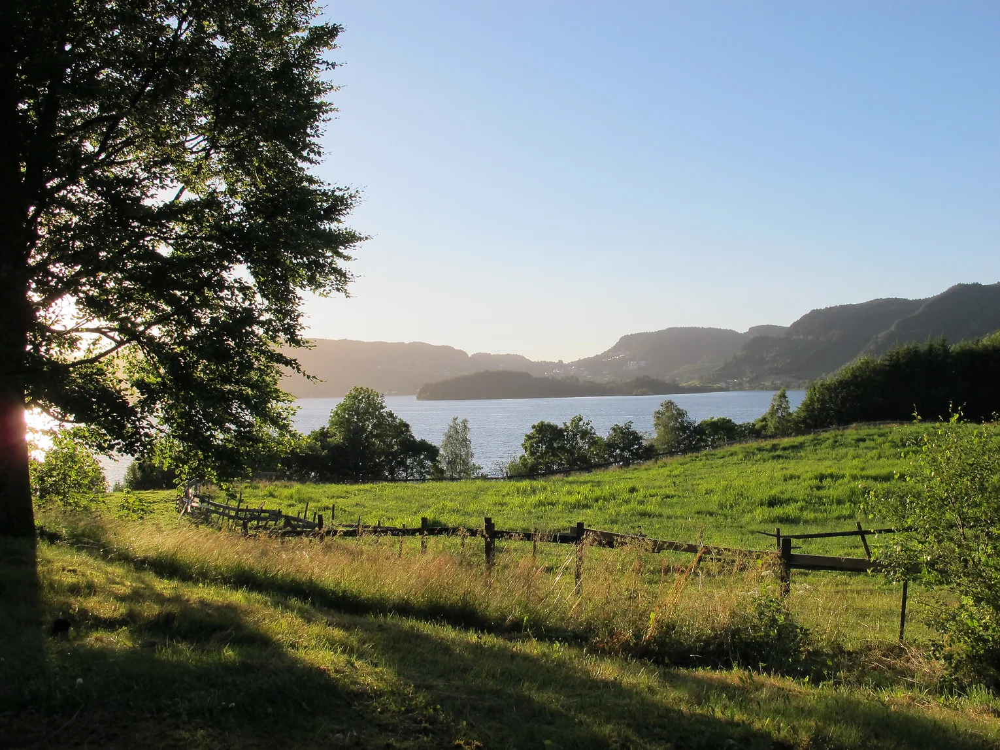
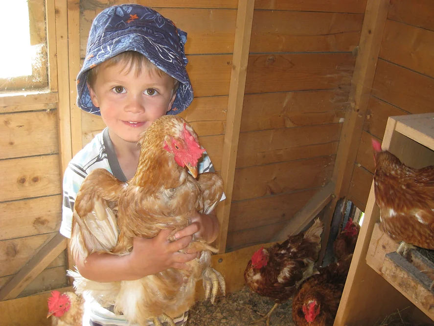
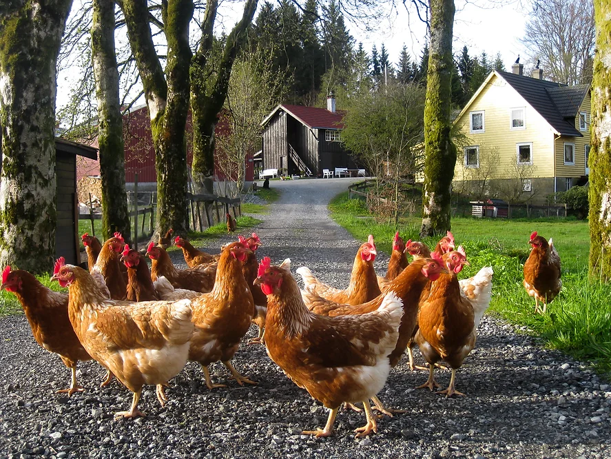
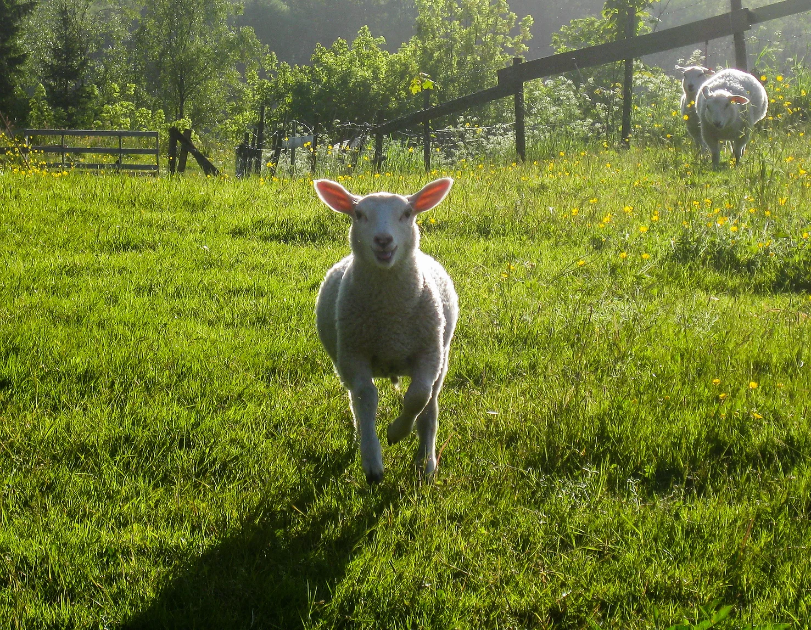
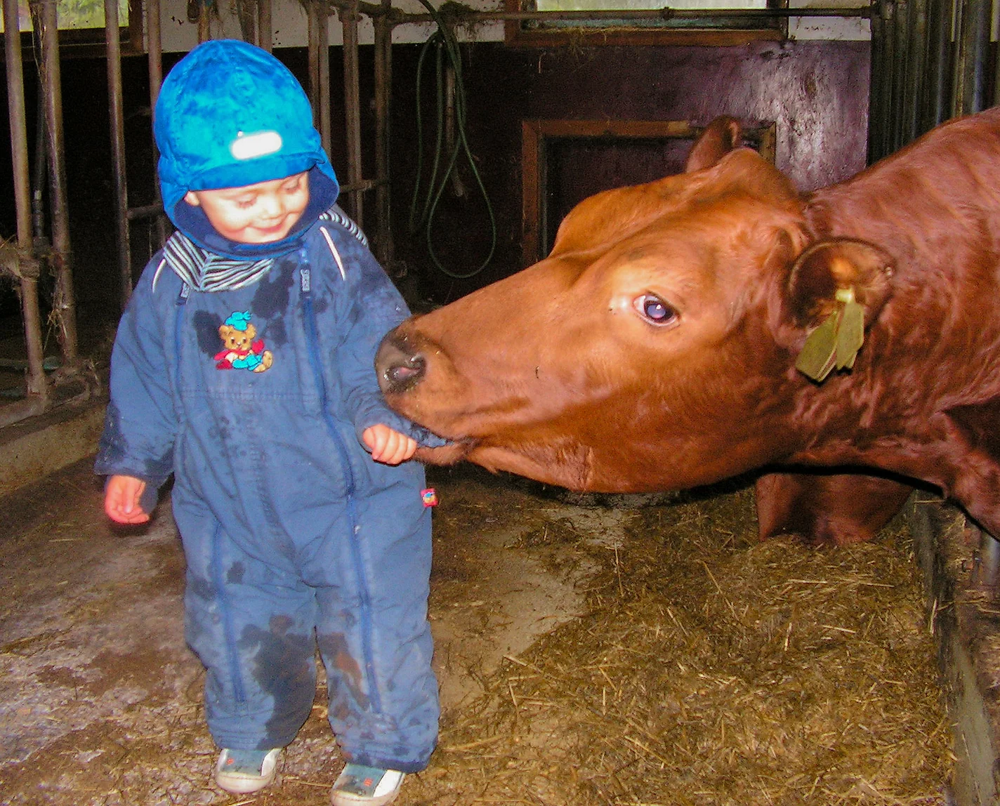
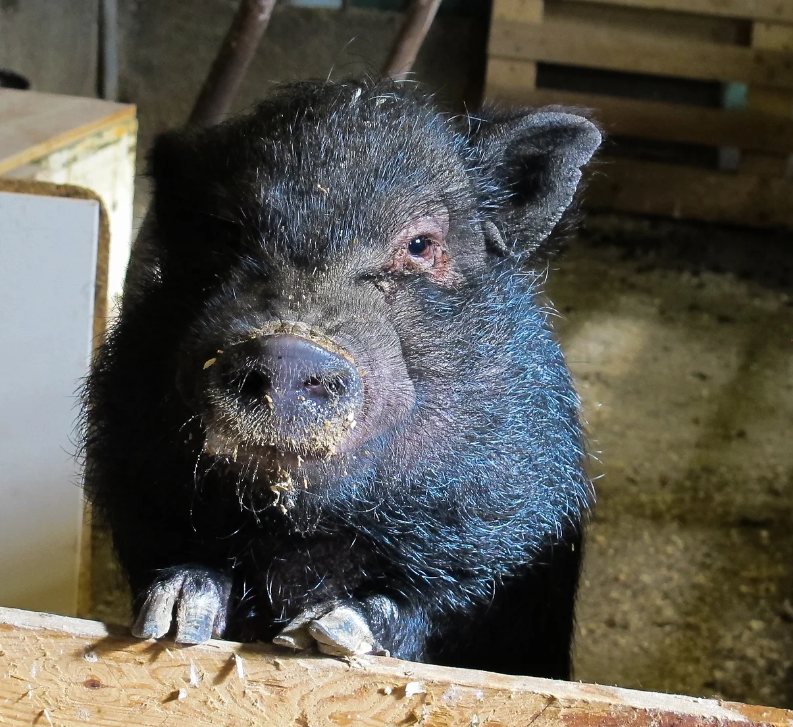
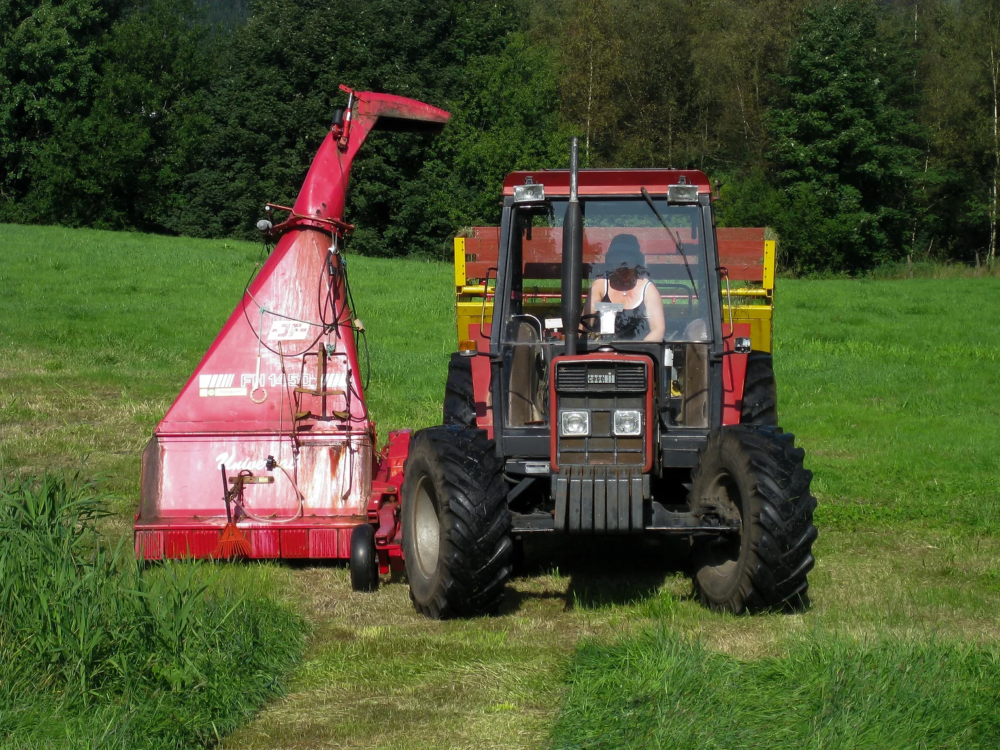
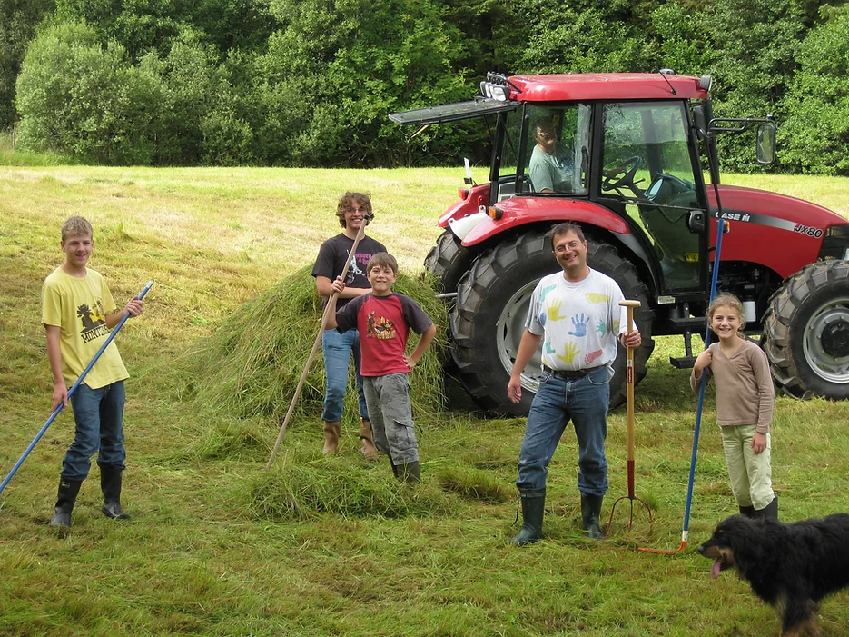

Framnes gård








Om Framnes Gård:
Gården ligger ved Kalandsvannet i Bergen, og bonden Solveig har ansvar for mange slags dyr.
Her treffer du spretne geiter og kaklende høner, myke kaniner, to kjælne katter og en turglad hund.
Lekeplass med hytter og husker, WC/stellerom.
Vi tar i mot alle med samme ønske; å gi tid til kos med dyrene, frisk luft og trygge opplevelser.
Her kan du også feire bursdag, eller komme på besøk med barnehagen.
Stabburet eller grillplassen har plass til 30 barn ved bordene.
Fine turområder i et stille og rolig miljø uten biler eller støy.
På banen til Fana Bueskytterklubb er mulig å prøve bueskyting med kvalifiserte instruktører, og hos kalandsvannets grunneierlag kan man leie båter på gården.
Framnes har også flere gode hjelpere som arbeider på gården gjennom ALF a/s, og sammen gjør vi gården til en god plass for alle å komme.
Gården er godkjent gjennom merket Inn på Tunet, og har avtale/konsesjon med Bergen kommune for å tilby gårdsbesøk.
Vi har et aktivt HMS-arbeid, og legger vekt på trivsel, mestring og sikkerhet for alle besøkende. Gode opplevelser for voksne og barn!